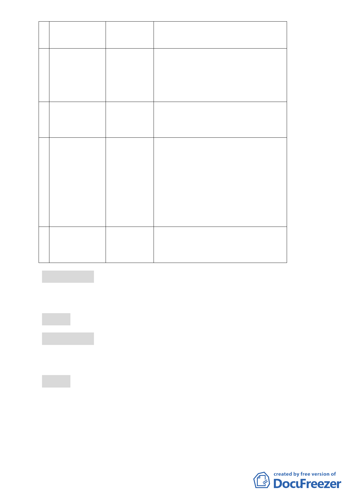

2 變更臺北市辛亥
國、高中用地主
要計畫案
3 臺北市中華電信
股份有限公司
32 處基地都市
計畫通盤檢討
（主要計畫及細
部計畫）案
4 擬定臺北市南港
區鐵路地下化沿
線土地細部計畫
案
5 變更臺北市北投
區泉源段四小段
771 地號等 7 筆
土地保護區及新
民段二小段
125-1 地號等 3
筆土地住宅區為
文教區主要計畫
暨擬定細部計畫
案
6 擬定臺北市文山
區景美溪左岸老
泉里附近地區細
部計畫案
陳委員武正
邱委員大展
陳委員武正
陳委員宏宇
洪委員鴻智
張委員桂林、洪委員鴻智、李委員素馨、
吳委員盛忠、李委員咸亨
陳委員武正、吳委員清輝、林委員志盈
洪委員鴻智、吳委員清輝、李委員咸亨、
陳雄文委員、林委員志盈
張委員桂林、陳委員武正、洪委員鴻智、
邊委員泰明、吳委員清輝、李委員素馨、
陳委員小紅
陳委員武正、吳委員清輝、邊委員泰明、
林委員楨家、邱委員大展、吳委員盛忠
報告事項 二
案由：為提高本委員會議審議效率，對於民間自行申請都市更新
單元範圍劃定案件之審議流程報告案
決議：洽悉備查。
報告事項 三
案由：為本會審議中逾期仍未提供資料之都市計畫案件，提請 退
案
決議：
一、 對於逾期仍無法完成審議之計畫案件，因時空背景改變、政
策調整以及無法即時反映民意等考量因素，依據都市計畫法
有關審議期限相關規定，要求申請單位提出檢討說明或以退
案方式辦理。
二、 但辦理退案屬行政作業程序，故請委員會執行秘書與市政府
-2-